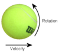

backspin

Definition: In sports, backspin or underspin refers to the reverse rotation of a ball, in relation to the ball's trajectory, that is imparted on the ball by a slice or chop shot. Backspin generates an upward force that lifts the ball (see Magnus effect). While a normal hit bounces well forward as well as up, backspin shots bounce higher and less forward. Backspin is the opposite of topspin.
Source: Wikipedia
Wikipedia Page
Wikidata Page